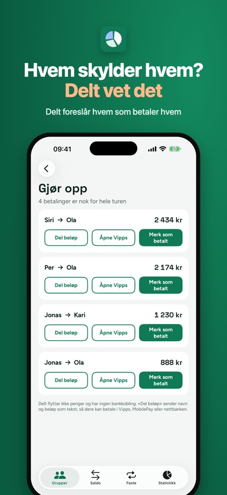
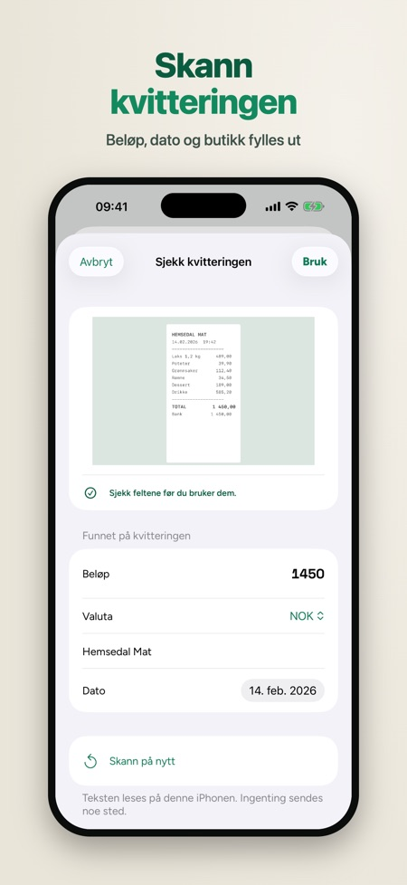
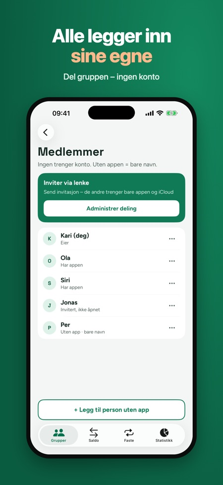

Del utgiftene på hytteturen, i kollektivet eller på reisen, uten regneark og uten konto. Legg inn hvem som betalte hva, så viser Delt hvordan dere gjør opp med færrest mulig betalinger.



Lag en gruppe, legg til folk og legg inn hver utgift med beløp, hvem som betalte og hvem som deler. Saldoen viser hvem som skylder hvem.
Lag en gruppe for turen, hytta eller kollektivet. De som ikke har appen, kan legges inn med bare navn.
Nei, Delt har ingen bankkobling. Dere betaler selv, for eksempel i Vipps eller nettbanken.
Nei. Ingen trenger konto hos oss. Inviter de andre med en iCloud-lenke.
Ja, endringene sendes når du er på nett igjen.
Grupper, utgifter, saldo og oppgjør kan brukes uten kjøp, uten grense per dag. Delt Pluss er et engangskjøp med kvitteringsskanning, flere valutaer, faste utgifter, statistikk og eksport.
Norsk, dansk, finsk og engelsk.
Del utgiftene på hytteturen, i kollektivet eller på reisen – uten regneark og uten konto. Legg inn hvem som betalte hva, så viser Delt hvem som skylder hvem og hvordan dere gjør opp med færrest mulig betalinger.
SLIK VIRKER DET
• Lag en gruppe for turen, hytta, kollektivet eller festen og legg til folk. De som ikke har appen, legges inn med bare navn.
• Legg inn en utgift på sekunder med tastaturet: beløp, hvem som betalte og hvem som deler.
• Del likt, i andeler, med eksakte beløp eller i prosent. Delt sjekker at summen stemmer.
• Saldoen viser hvem som får tilbake og hvem som skylder. Ingen øre forsvinner – saldoen går alltid opp, likt på alle telefoner.
• Gjør opp: Delt foreslår færrest mulig betalinger («Per betaler Kari 620 kr»). Del beløpet som tekst eller åpne Vipps, og merk det som betalt.
DEL GRUPPEN VIA ICLOUD
Inviter de andre med en iCloud-lenke. De som har appen, legger inn egne utgifter, og endringene synkes. Ingen trenger konto hos oss, og det er ingen reklame: gruppene ligger i din egen iCloud, ikke på våre servere. Virker også uten nett – endringene sendes når du er på nett igjen. Hver utgift har historikk, så alle ser hvem som endret hva.
DELT PLUSS (ENGANGSKJØP)
• Skann kvitteringen: beløp, dato og butikk fylles ut, og bildet lagres på utgiften (de tre første skanningene er med uten kjøp)
• Flere valutaer med kurs du skriver inn selv
• Faste utgifter for kollektivet: husleie, strøm og internett legges inn hver måned (én fast utgift er med uten kjøp)
• Statistikk per kategori og per person, eksport til regneark (CSV) og PDF
Grupper, utgifter, saldo, oppgjør og bildet av saldoen kan brukes uten kjøp – uten grense per dag.
Delt flytter ikke penger og har ingen bankkobling. Betalingen gjør dere selv, for eksempel i Vipps eller nettbanken.
Språk: norsk, dansk, finsk og engelsk.